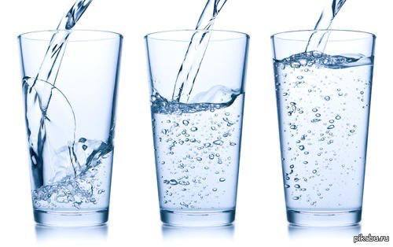
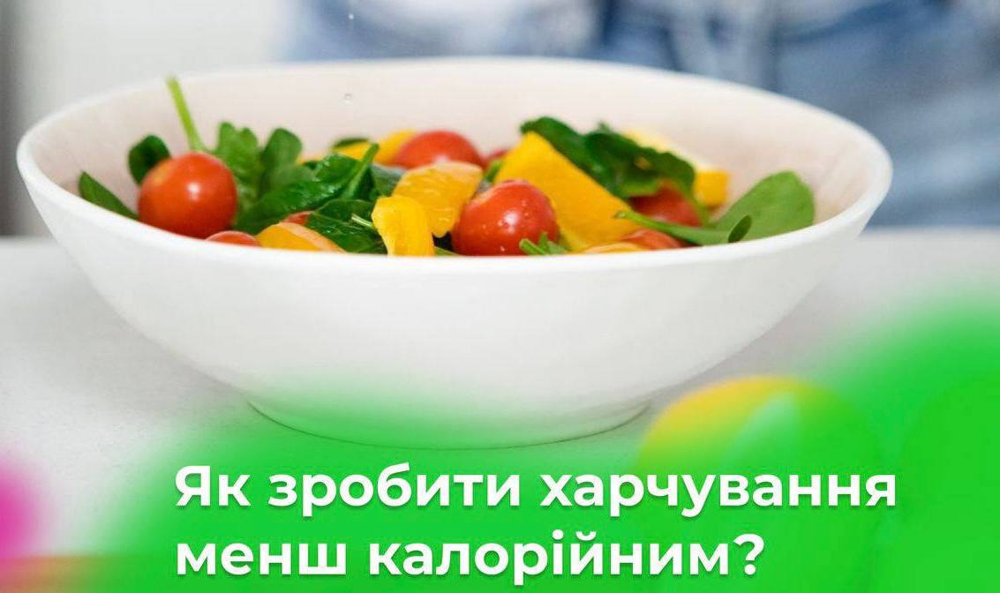
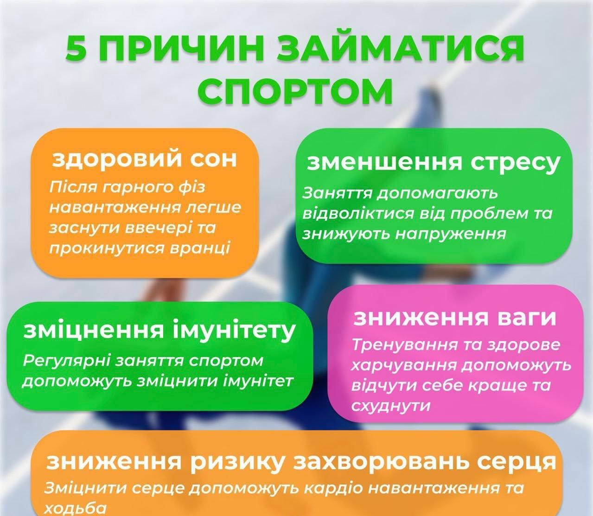
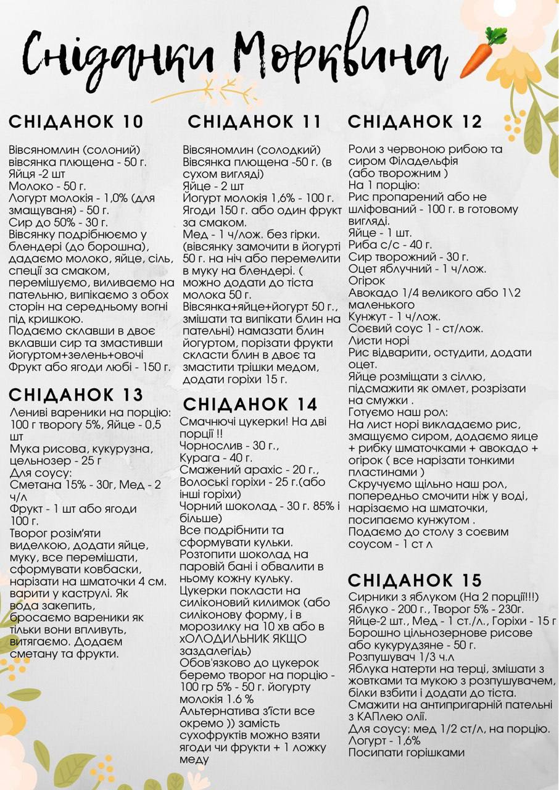
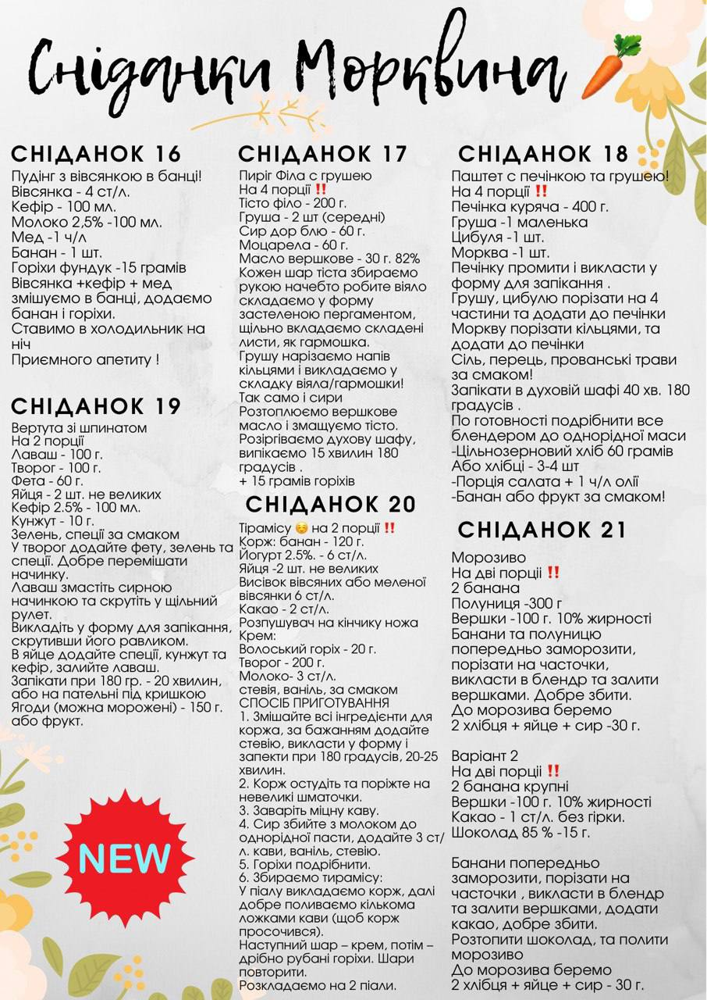

МАРАФОН ОЗДОРОВЛЕННЯ ТА СТРУНКОСТІ
МАРАФОН ОЗДОРОВЛЕННЯ ТА СТРУНКОСТІ
ПОРАДИ

Водний баланс - ключ до успішного схуднення. Пийте щонайменше 1,5 літри води щодня, це сприяє обміну речовин та виведенню токсинів.

Овочі🥦🌽 можна запікати в духовці, на грилі, на пару, а потім використовувати, наприклад, для приготування салатів 🥗 та інших страв, додаючи невелику кількість олії. Так само можна вчинити з тушкованими овочами. Спочатку протушкувати у воді, а олію додати в кінці приготування. Це дозволить також зберегти корисні властивості олії, яка при тривалій термічній обробці стає шкідливою для здоров'я.

- 📍 Починай ранок з руханки. Хоча б проста руханка – це вже користь для організму. Зараз можна попрактикувати різні варіанти тренувань: від йоги до танців і знайти те, що до вподоби.
- 📍 Невеликі активні перерви під час роботи. Це обов'язково для тих, хто проводить весь день за ноутбуком.
- 📍 Ходи. Це можна робити навіть у квартирі. Наприклад, розмовляй телефоном не сидячи, а походжаючи туди сюди 😊 Повір, навіть такі маленькі дії – це користь для здоров'я.
СНІДАНКИ


